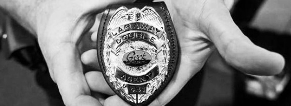

-
THE BADGE

WHAT IT IS
The Geek Squad badge is a milestone of achievement. It is a method of identification. A status symbol identifying someone who holds elite levels of technical achievement in the ranks of the Geek Squad. The badge is earned, not given.
WHY WE DO IT
The badge has been a part of Geek Squad since the very beginning. This emblem is based on the Chicago Police Department's shield, and is literally a "badge of honor" for Geek Squad Agents.
We want the world to see that Geek Squad is not just another technical support company. Part of our mission is to give the impression of a strong, united organization, tied together by professionalism, integrity and style.
It also serves as a means of identifying our Agents upon entering a client's home or place of business. It signifies that an Agent is part of something much greater than just one person: that they are part of the greater family of Geek Squad, meet the standards of Geek Squad, and lives the values of the Geek Squad.
BADGE NO. 001
Rumour has it that no one working at Geek Squad is issued Badge No. 001. That Badge is reserved for our clients. Without them, Agents are just super smart people who dress alike.